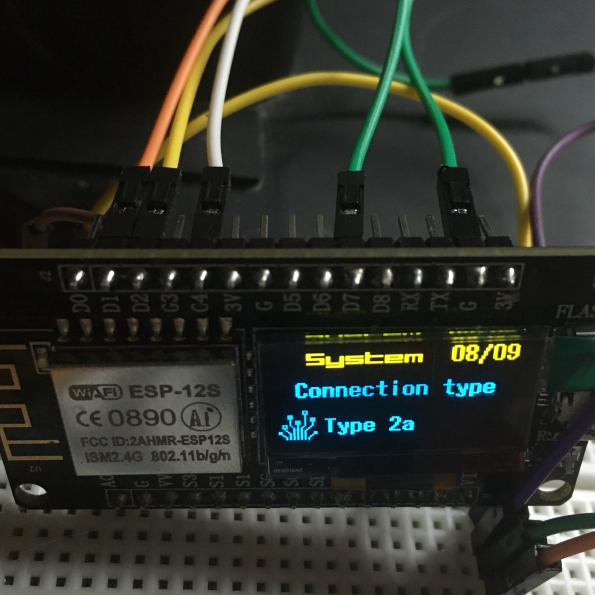

ESP8266 · OLED · TOTP
XenithOS

| D1 | |
| D2 | |
| C4 (D4) | |
| D7 | |
| FLASH · G3 (D3) |
arduino-cli core install esp8266:esp8266 --additional-urls https://arduino.esp8266.com/stable/package_esp8266com_index.json
arduino-cli lib install U8g2 NTPClient Time "TOTP library" Base32-Decode
arduino-cli compile --upload -p /dev/ttyUSB0 --fqbn esp8266:esp8266:nodemcuv2 firmware/XenithOS// Wi-Fi networks — the first one that answers is used
{"Network1", "Password1"},
{"Network2", "Password2"},
// accounts: name in the menu, Base32 secret without spaces
{"GitHub", "JBSWY3DPEHPK3PXP"},
{"Mail", "KRSXG5CTMVRXEZLU"},| Beta 2 RC | XenithOS.ino .bin | ||
| Beta 1 | XenithOS.ino .bin |